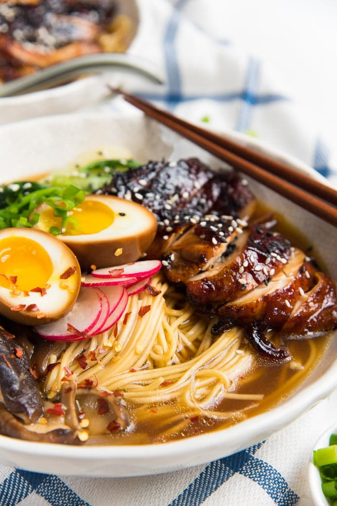

Ramen

Description
Simply put, ramen is a Japanese noodle soup, with a combination of a rich flavoured broth, one of a variety of types of
noodle and a selection of meats or vegetables, often topped with a boiled egg. And it's just sooo tastyy!!
Ingridients
Caramelized Soy Chicken
Marinade for the chicken
- 2 tbsp mirin
- 1 tbsp dark soy sauce
- 1/4 tbsp cayenne pepper
- 2 garlic cloves
- 4 pieces chicken thigh
Glaze for the chicken
- 2 tbsp brown sugar
- 2 tbsp dark soy sauce
Classic Ramen
- 4 - 5 cups good quality chicken stock
- 4 stalks of spring onions
- 4 - 5 cloves garlic
- 2 inch piece of ginger
- 4 red chili
- 1/4 cup light soy sauce
- 1/4 cup mirin
- 8 ounces shiitake mushrooms
- 12 – 13 oz dried ramen noodles
Regular soft boiled eggs
- 4 large eggs
Steamed Greens
- 2 bunches of spinach or 4 shanghai bok choy
- Soy sauce
- Sesame oil
- Garlic
Ramen toppings
- 4 stalks of spring onions
- Sliced radishes or bean sprouts
- Ramen eggs
- Chili garlic oil
Instructions
Caramelized Soy Chicken
-
Place all the ingredients for the chicken marinade in a bowl. Mix well to coat the chicken. If time permits, allow the
chicken to marinate for at least 1 hour.
-
Preheat oven to 425°F, and place an oven rack in the top third of your oven. Line a baking sheet with parchment paper.
-
Place the chicken pieces on the baking sheet, skin side down (or smooth side down), evenly spaced apart. Then place the baking sheet in the preheated oven (upper third).
-
Let the chicken roast for 15 minutes. While the chicken is cooking, mix the brown sugar and dark soy sauce for the glaze, and start making the ramen.
-
After 15 minutes, flip the chicken pieces over and spoon the glaze over them. Let the chicken cook for a further 10 - 15 minutes. Then remove from the oven and let them cool down.
-
Slice the chicken and set aside.
Ramen Egg or Unseasoned soft boiled egg
-
Make ramen eggs the day before, according to this recipe. OR make regular soft boiled eggs to top your ramen bowl. (Ramen eggs need at least 2 hours to marinate).
-
To make regular soft boiled eggs - bring a pot of water to a boil. Lower 4 large eggs carefully into the water and cook
the eggs for 6 - 6 ½ minutes.
-
Immediately place the eggs in cool running water or an ice bath for a few minutes. Peel and set aside until ready to serve. This can be done BEFORE you cook the ramen as well.
Steamed greens
-
Wash the greens, and cut them in half, or into sections if necessary (for Shanghai bok choy).
-
Place the greens in a bowl and drizzle a little soy sauce and sesame oil (and garlic) on top. Toss to combine.
-
Cover and microwave in 1 minute increments until the greens have softened, but not too wilted. Alternatively, you can heat a non-stick pan with a little oil, and pan fry the greens with soy sauce and garlic for about 2 – 4 minutes.
To Serve
-
Evenly divide the hot stock between the four bowls with ramen noodles.
-
Top with the steamed greens, sliced soy chicken, ramen eggs, spring onions, radishes and other toppings you like.